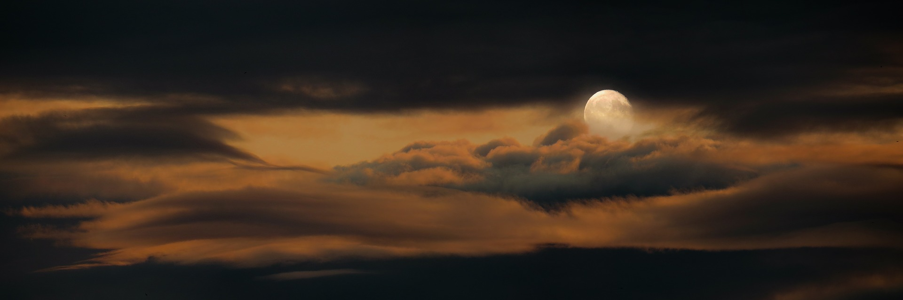

El Blog de AJAX
Globos Aerostáticos
Un globo aerostático es una aeronave aerostática no propulsada que se sirve del principio de los fluidos de Arquímedes para volar, entendiendo el aire como un fluido. Hay diferentes tipos, los globos de aire caliente siempre están compuestos por una bolsa abierta en su parte inferior que contiene una masa de aire caliente (gas de elevación).

Blanco & Negro
Blanco y negro puede referirse a: Fotografía en blanco y negro; Blanco y negro, formato de las artes visuales; música.

La Luna
La Luna es el único satélite natural de la Tierra. Con un diámetro ecuatorial de 3474.8 km, es el quinto satélite más grande del sistema solar, mientras que en cuanto al tamaño proporcional respecto a su planeta es el satélite más grande
Sierra Nevada
Sierra Nevada es un macizo montañoso de España perteneciente al conjunto de las cordilleras Béticas, concretamente al sistema Penibético. Está situada entre las provincias de Granada y Almería.